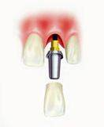
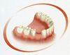
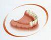
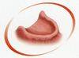

«Что такое зубные имплантаты?»
Имплантат является искусственной заменой корня зуба. Изготовлены они из медицинского титана. Почему? Потому что, в 1952 году революционным открытием стали концепции шведского учёного Бранемарка об интеграции костной ткани с титаном, что сделало его стандартным материалом для изготовления дентальных имплантатов.

Опыт современной имплантологии позволяет нам с уверенностью констатировать, что правильно выбранный, правильно поставленный и правильно используемый имплант может выполнять свою функцию в течение нескольких десятилетий. Его долговечность во много раз превосходит те сроки, на которые он рассчитан.
Все имплантаты имеют структурированную поверхность, благодаря чему улучшается процесс вживления. Установленный в кость под десну, имплантат через несколько месяцев прочно срастается с ней и служит опорой искусственной коронке.
«ПРЕИМУЩЕСТВО ИМПЛАНТАЦИИ ПЕРЕД ТРАДИЦИОННЫМ ПРОТЕЗИРОВАНИЕМ?»
+
При отсутствии одного или двух зубов импланты позволяют избежать препарирования (обтачивания) здоровых зубов для изготовления мостовидного протеза. Кроме того собственные зубы не испытывают лишней нагрузки за соседние отсутствующие зубы. В этом заключается «биологический» подход имплантации в сравнении с традиционным протезированием.
При отсутствии большого количества или всех зубов применение имплантов позволяет избежать изготовления съёмных протезов. Для многих пациентов пользование съёмными протезами является невозможным из-за нарушения вкуса, наличия выраженного рвотного рефлекса. Кроме того фиксация съёмных протезов со временем ухудшается из-за атрофии (уменьшения) костной ткани челюстей. Имплантаты позволяют либо избежать использования съёмного протеза вообще, либо позволяют улучшить его фиксацию.
«КТО ЯВЛЯЕТСЯ КАНДИДАТОМ ДЛЯ ДЕНТАЛЬНОЙ ИМПЛАНТАЦИИ?»
+
Хороший кандидат для установки зубных имплантов – это тот, кто:
заботится о собственном здоровье;
соблюдает хорошую гигиену полости рта;
регулярно посещает стоматолога.
Показаниями к дентальной имплантации являются:

Одиночные дефекты зубного ряда, когда проведение имплантации позволит избежать препарирования расположенных рядом с дефектом зубов;
Оключенные дефекты зубных рядов, когда при помощи имплантации можно избежать препарирования ограничивающих дефект зубов и съёмного протезирования;

Концевые дефекты зубных рядов, при которых имплантация позволяет осуществить несъёмное протезирование.

полная адентия (отсутствие всех зубов), когда при помощи имплантации можно провести несъёмное протезирование либо обеспечить более надёжную фиксацию полных съёмных зубных протезов.
«СУЩЕСТВУЮТ ЛИ ВОЗРАСТНЫЕ ОГРАНИЧЕНИЯ ДЛЯ ДЕНТАЛЬНОЙ ИМПЛАНТАЦИИ?»
+
Верхней возрастной границы для проведения дентальной имплантации может не существовать! Успех имплантационного лечения связан с функциональным состоянием органов и систем организма. Имплантаты успешно приживаются и в 85 лет. Но детям имплантация практически никогда не проводится. Исключение может составлять врождённое отсутствие зубов. Нежелательно проводить имплантацию раньше 18-20 лет, так как только к этому возрасту заканчивается рост челюстей.
«ВСЕМ ЛИ МОЖНО УСТАНОВИТЬ ИМПЛАНТАТ?»
+
Во многих клиниках пациентам отказывают в имплантации из-за атрофии костной ткани после длительного отсутствия зубов, потому что надежная установка имплантата возможна только при наличии достаточного объёма челюстной кости. В таких случаях нами проводится остеопластика – наращивание костной ткани. Это новейшее достижение биомолекулярных технологий, применение которых позволяет сокращать сроки приживления имплантатов и гарантировать их приживаемость.
«БОЛЬНО ЛИ ВЖИВЛЯТЬ ИМПЛАНТАТ?»
+
Нет, не больно. Качественно проведенная местная анестезия полностью исключает возможность возникновения каких-либо болевых ощущений у пациента во время операции. Для анестезии мы используем анестетики последнего поколения : «Убистезин», «Артикаин», «Ультракаин» и др. Заметим, что вживление импланта – процедура не более травматичная, чем банальное удаление зуба.
| Установка одного имплантата Nobel Replace GROOVY (Швеция) |
55 000 руб. |
| Установка одного имплантата Nobel Replace Conical Connecton (Швеция) |
55 000 руб. |
| Установка одного имплантата Nobel Parallel Conical Connecton (Швеция) |
55 000 руб. |
| Установка одного имплантата Nobel Replace ACTIVE (Швеция) |
55 000 руб. |
| Установка одного имплантата NobelSpeedy Groovy (Швеция) |
55 000 руб. |
| Установка одного имплантата AlphaBio (Израиль) |
35 000 руб. |
| Реабилитация при полной адентии верхней или нижней челюсти, изготовление и фиксация съемного протеза на «локаторах» с опорой на 4-х имплантатах AlphaBio (Израиль) |
250 000 руб. |
| Установка формирователя десны |
3 000 руб. |
| Удаление имплантата |
8 000 руб. |
| Пластика костных тканей с использованием аутотрансплантата и ксенотрансплантата |
75 000 руб. |
| Пластика костных тканей с использованием ксенотрансплантата |
35 000 руб. |
| Открытый синус-лифтинг |
70 000 руб. |
| Закрытый синус-лифтинг |
10 000 руб. |
| Изготовление хирургического шаблона |
5 000 руб. |
| Забор и пересадка соединительно-тканного трансплантата |
10 000 руб. |
| Использование в области одного зуба ксенотрансплантата |
12 000 руб. |
| Забор крови из вены, изготовление PRP-массы |
500 руб. |
| Внутривенные инъекции |
1 000 руб. |
| Гайморотомия |
25 000 руб. |
ПЕРЕЙТИ К УСЛУГАМ